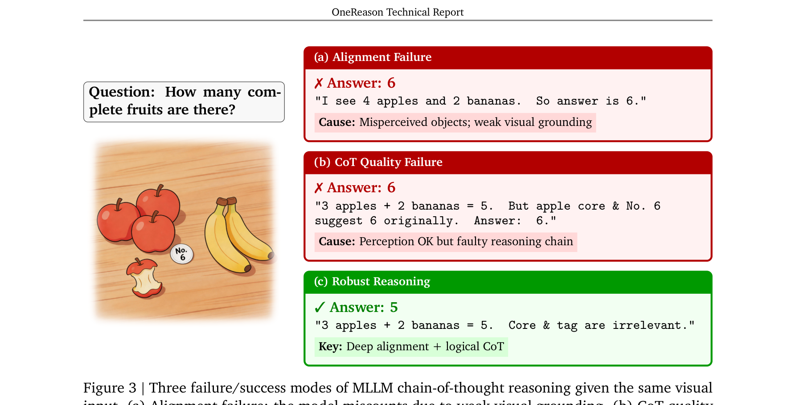
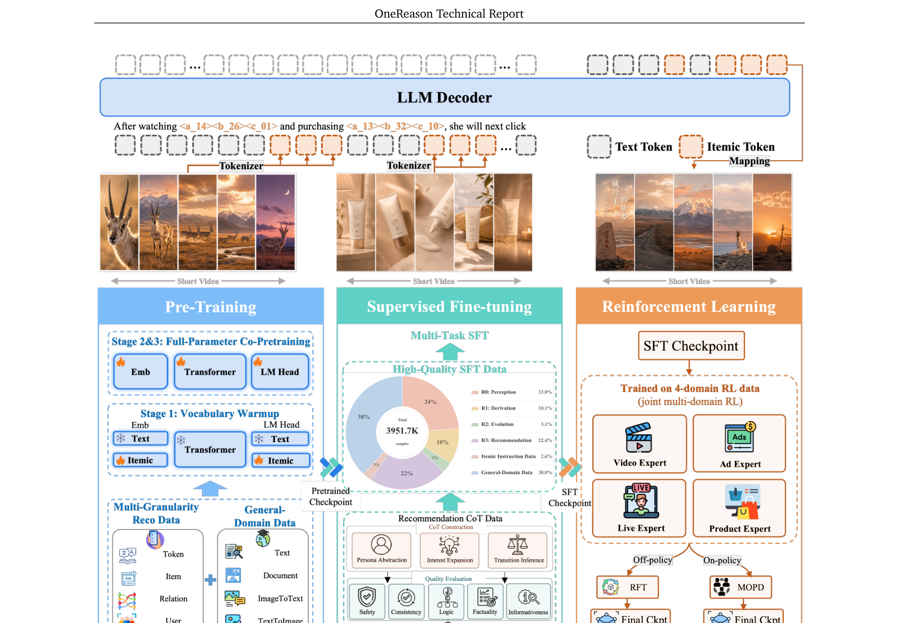
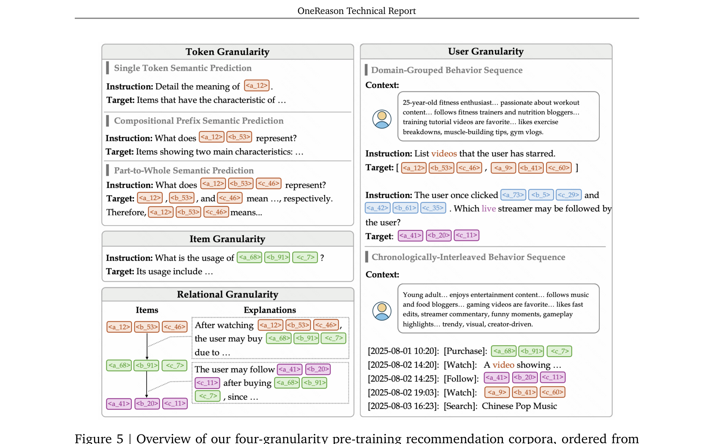
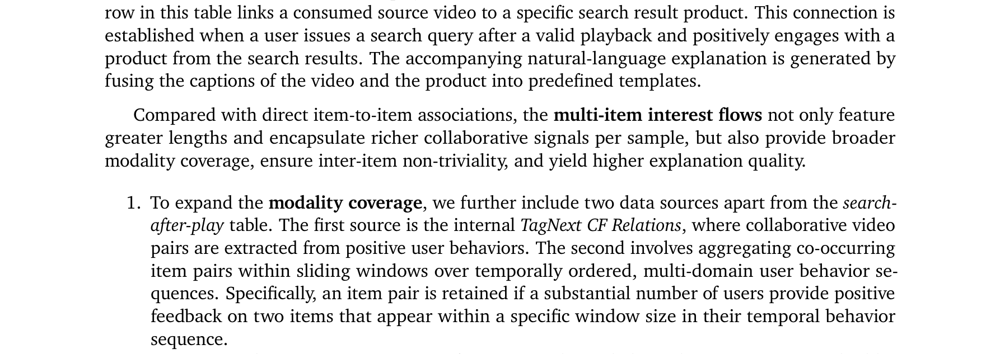
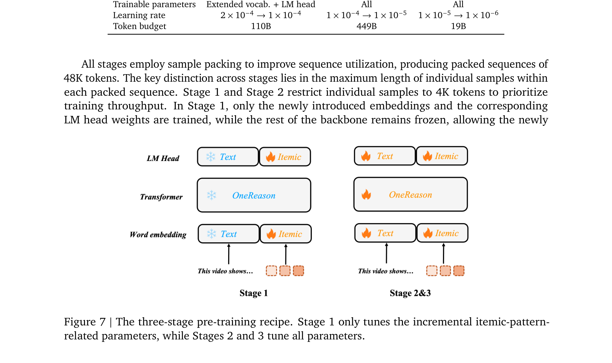
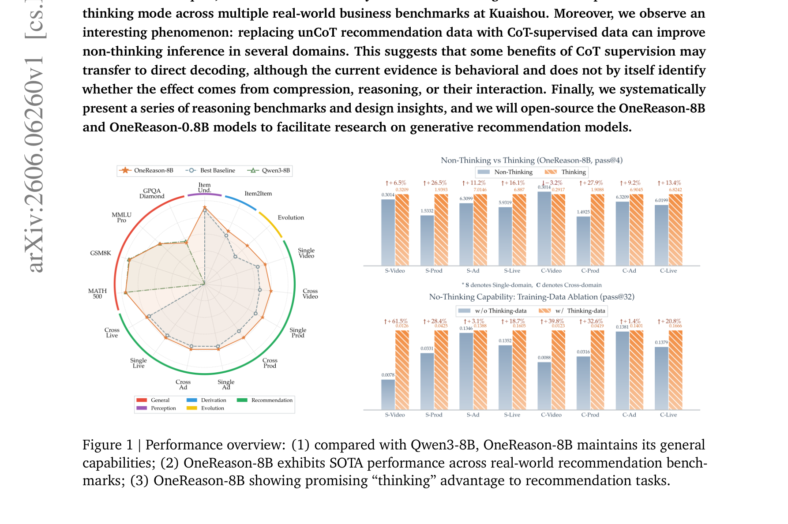

← 返回论文列表
📄 论文解读 · Generative Recommendation × Reasoning
OneReason：让生成式推荐真正"先思考再回答"
OneReason Technical Report · 用 Perception × Cognition 双支柱激活推荐场景的 CoT 推理
💡一句话总结
核心命题：OneRec 系列在生成式推荐已经验证了 Scaling 性质，但 Reasoning 性质 始终激活不起来——之前的 OneRec-Think / OpenOneRec 都出现了"thinking mode ≤ non-thinking mode"的反常现象。
OneReason 的回答：借鉴 MLLM 的发现，把推荐 CoT 失效拆成两个根因——Perception（感知对齐） 与 Cognition（结构化思维链），并配套三件套：① Pre-training 四粒度数据强化 itemic token 的语义对齐；② SFT 用 R0→R1→R2→R3 四层认知 CoT；③ RL 走"Specialize-then-Unify"先单域专精再跨域统一。
结果：thinking mode 在快手四域基准上首次稳定超越 non-thinking mode；并意外发现 CoT 监督会"渗透"到 non-thinking 推理，给 unCoT 数据训练的模型带来增益。
📎 论文链接：arXiv 2606.06260 (PDF)
🏢 机构：Kuaishou · OneRec Team
🎯 关键贡献：四粒度 Pre-training 数据 / R0–R3 认知层级 / Specialize-then-Unify RL / OneReason-Bench
🔓 开源计划：OneReason-8B 与 OneReason-0.8B 模型
🎯背景与动机
两大 LLM 性质：Scaling 与 Reasoning
近年来 LLM 进步主要靠两个性质：
- Scaling property（pre-training 阶段）：模型/数据/算力同步放大，loss 沿着可外推的曲线下降，多个 benchmark 同步抬升。
- Reasoning property（post-training 阶段）：SFT + RL 解锁 CoT，形成"think-before-answer"范式，OpenAI o1、DeepSeek-R1 是典型代表。
OneRec V1/V2 已经在工业推荐里验证了 Scaling 性质（快手实测有显著业务收益），但 Reasoning 性质迟迟激活不起来。原因很简单：OneRec 只学过纯 itemic 序列，里面只有"扁平转移模式"，没有任何"逻辑推理痕迹"。
反常现象：thinking mode 不如 non-thinking mode
OneRec-Think 和 OpenOneRec 已经把 itemic-text 交错数据 + 通用推理数据塞进训练，让模型在推荐任务里也能"先思考再回答"。但作者观察到一个非常反直觉的现象：
⚠️ Thinking mode 在推荐基准上 没有 显著优势，甚至时常不如 non-thinking mode。
这和 LLM 数学/代码任务里 CoT 普遍带来收益的经验完全相反，必须找到根因才能突破。
借鉴多模态 LLM 的诊断
作者把目光转向 MLLM (multi-modal LLM) 文献，发现一组高度相似的"推理脆弱性"现象：
- 当文本与视觉模态对齐不足时，模型只会"机械地读取表面像素文字"，并不会真正基于视觉语义推理。
- 即使模态对齐做对了，如果 CoT 轨迹本身结构不好，仍然会幻觉 / over-thinking。
由此抽象出两条互补的"先决条件"：
① Modality Alignment in Perception
让 itemic token 不再是"不透明 ID"，而是与自然语言空间深度对齐的、可引用的语义单元。
② CoT Quality in Cognition
提供从粗到细、逻辑连贯的 CoT 模板，避免推理飘移和过度思考，把推理放到对齐之后才能发挥作用。

Figure 3：MLLM CoT 三种失败/成功模式
(a) Alignment Failure：感知错位，把 4 个苹果数成 6 个
(b) CoT Quality Failure：感知 OK 但推理链跑偏，得到 6
(c) Robust Reasoning：深度对齐 + 逻辑 CoT，正确答 5 '" />
Figure 3（论文原图）：三种 CoT 模式对比。(a) 视觉对齐失败导致数错；(b) 对齐对了但 CoT 跑偏；(c) 双支柱齐全才能得到鲁棒推理。这张图是整篇论文的诊断起点——推荐场景的 thinking 失效本质上和 (a) (b) 是同一类问题。
对推荐场景的映射：
- Perception → itemic token 必须能落到具体内容（"这是个什么商品/视频/直播间"）
- Cognition → 用结构化 CoT 把"看历史 → 抽兴趣 → 演化 → 推下一个"的逻辑组织好
- 两者缺一不可，否则就回到 OneRec-Think / OpenOneRec 的"思考无效"困境
🧠推理设计哲学（R0–R3）
在描述架构之前，作者先回答一个根本问题：什么才算"好的"推荐 CoT？
经典 LLM 推理任务（数学/代码/符号逻辑）有一个唯一正确答案，中间步骤遵守世界知识就能逻辑推导。但推荐场景天然不一样：
- 同一时刻有 多个合理的下一个 item
- 用户真实意图 不可观测，必须从历史行为反推
因此推荐推理是 溯因（abductive）而非 演绎（deductive）——需要"假设潜在兴趣点 → 建模时序演化 → 用其证明候选合理性"。
一条好的推荐 CoT 必须做到 4 件事：
- 从历史行为里挑出"可能的兴趣点"作为假设
- 把它们压缩成可解释的偏好
- 建模这些兴趣随时间的迁移
- 用推断出的偏好状态，关联当前候选 item，给出推荐理由
这个抽象直接落地为 R0–R3 四层认知层级，也是后续 Pre-training / SFT / RL / Benchmark 的"统一骨架"：
| 层级 | 名称 | 核心能力 | 缺失的代价 |
|---|
| R0 | Perception 感知 | 把 itemic token 落到语义内容 | 用户行为完全无法解读 |
| R1 | Derivation 推导 | item→item 语义/常识关联 | 无法从噪声历史里抽出潜在兴趣 |
| R2 | Evolution 演化 | 同一兴趣的时序演化 | 长短期/周期偏好都模型不出 |
| R3 | Recommendation 决策 | 跨域综合做出下一步推荐 | 无法生产可用结果 |
💡 举例：用 R0–R3 解读一个真实场景
假设用户最近 7 天历史是：[篮球教学视频 → 运动鞋短视频 → 护腕直播间 → 运动手环商品]。
R0：模型先识别每个 item 的语义（"运动相关"、"装备相关"、"直播带货"等）。
R1：从单个 item 推断关联——"运动鞋"和"护腕"都属于"运动装备消费链路"。
R2：建模时间演化——用户从"看教学（兴趣探索）"演变为"看装备（购买决策）"。
R3：综合得出：下一个该推"运动饮料 / 健身餐"或"篮球训练课直播"，跨域满足消费决策需求。
这个 R0–R3 的层级化设计是整篇论文最重要的"抽象骨架"，后面每个章节（Pre-training 数据、SFT 数据、Benchmark 任务）都是按这四层组织的，可以理解为"从认知科学倒推工程方案"。
⚙️方法详解
整体三阶段框架
OneReason 的训练流程如 Figure 2 所示，三阶段紧扣 Perception × Cognition 双支柱：
Pre-Training
四粒度数据
itemic-text 对齐
→
→
RL
Specialize-then-Unify
单域专精 + 跨域统一
→
OneReason-8B
Thinking 模式
真正 > non-thinking

Figure 2：OneReason 完整 Pipeline
Pre-training（四粒度数据）→ SFT（R0–R3 CoT）→ RL（Specialize-then-Unify）→ Benchmark '" />
Figure 2（论文原图）：OneReason 完整训练 + 评估 pipeline。从底层 itemic tokenizer，到四粒度 pre-training 数据，到四层认知 SFT，到分域 RL 与统一蒸馏，每一步都对应 R0–R3 的某个能力维度。
Itemic Tokenizer：把 item 压成 3 个 sub-token
OneReason 的"原子单位"是 itemic pattern——一个 item 被压成 1 个域 token + 3 个 sub-token，整个推荐世界就建在这套 token 上。
编码过程
1
多模态 encoder 抽 dense embedding
ViT + Qwen3-VL（视觉/文本）+ 音频 encoder，把 cover image / 视频帧 / 文字描述 / 音频 蒸馏成一个紧凑 dense embedding。
2
端到端联合优化
把 embedding 作为 soft prefix 接到 decoder LLM 前面，再接 item 文字描述，让 embedding 通过 item-understanding 任务被端到端调出来——保证它真的"懂"这个 item。
3
RQ-KMeans 三层量化
三层 codebook，每层 8192 个 code。每个 item 最终表示成：
<|domain_begin|><a_5028><b_6733><c_2559>
其中 domain ∈ {video, prod, ad, living, sid}（最后一个 sid 给通用多模态数据用）。
关键工程改动：去掉 trailing end token。
不像 OpenOneRec 那样在每个 item 后面加 end token，OneReason 直接砍掉。这是为了 给推理 trace 留出更多 context 容量——thinking mode 下每多一个 item 就多省 1 个 token，长用户历史 + 长 CoT 都需要这个空间。
💡 举例：一个商品 item 怎么被编码
假设有一件商品 item，是"Nike 篮球训练护腕，黑色"。
① 多模态 encoder 输入：商品主图 + 视频展示 + 标题 + 详情文字 → 输出 1 个 dense vector（比如 768 维）。
② RQ-KMeans 量化：三层 codebook 分别编码出 a_3142（顶层语义：运动装备）、b_5781（中层：篮球护具）、c_2890（细粒度：黑色护腕）。
③ 最终 itemic pattern：<|prod_begin|><a_3142><b_5781><c_2890>，4 个 token 装下整个商品。
Pre-training：四粒度数据系统（论文最大创新）
之前工作（OneRec-Think、OpenOneRec）按"任务类型"组织数据：item caption / 用户行为序列 / persona-text 交错。作者认为这种组织有 三个结构性缺陷：
- 语义表达过于同质，模型见到的语言多样性不够
- 没有显式建模 sub-token 内部的细粒度语义层级，也没有跨 item 的关系逻辑
- 用户建模套用"完整画像 → 完整序列"的窄条件范式，泛化弱
对应解法是把数据按 从微观到宏观的四个粒度 重组（Figure 5）：

Figure 5：四粒度 pre-training 数据全景
Token Granularity → Item Granularity → Relational Granularity → User Granularity'" />
Figure 5（论文原图）：四粒度 pre-training 数据，从最细的 sub-token 语义组合，到完整 item 对齐，再到 item-to-item 关系链，最后到用户级序列演化。每一层都解决前一层留下的对齐缺口。
① Token Granularity（最细粒度）
专治"sub-token 是孤立的"问题。除了基本的"单 token → 语义"对齐，OneReason 加了两套关键任务：
- Compositional Prefix Semantic Prediction：给定 sub-token 前缀对
<a_xxxx><b_xxxx>，让模型预测它代表的"组合语义"——以及反向的 Prefix Itemic Token Grounding（自然语言 → 找前缀）。这显式建模了 sub-token 之间如何"组合成语义"。
- Part-to-Whole Semantic Prediction：两步生成——先逐 sub-token 给出细粒度解释，再合成完整 item caption。强制"part → whole"的结构化语义生成。
② Item Granularity（item 级对齐）
类似 OpenOneRec 的 item caption 数据，但有两个关键升级：
Capacity-Aware Caption Coarse-Graining（容量感知粗化）：
3 个 sub-token 装不下精细信息（OCR 文字、价格、商品型号、ASR 歌词等都装不下）。如果硬塞精细 caption，会强迫模型幻觉、污染语义空间。所以 主动把 caption 粗化：
- (i) 移除 OCR / ASR / 日期 / 商品型号等 token 装不下的细节
- (ii) 连续值分桶："19.99 元" → "百元价位段"；具体年龄 → "young adult"
- (iii) 保留高判别性骨架：商品类目、品牌、IP、核心卖点、目标人群
每个业务域（video / product / live / ad）都有独立的粗化规则。
- Multi-Perspective Item QA：从"目标人群偏好 / 核心卖点 / 视觉风格 / 负反馈原因"等多个角度问 item，把对齐从单一描述升到多维语义审讯。
③ Relational Granularity（item↔item 关系）
每个训练样本是一条交错链：
$\text{Itemic\_Pattern}_0 \to \text{Textual\_Explanation}_0 \to \text{Itemic\_Pattern}_1 \to \cdots \to \text{Itemic\_Pattern}_n$
三个数据源：
- search-after-play 表：用户看完视频后搜索并下单某商品 → 直接的 video→product 关联，配套用模板生成自然语言解释
- TagNext CF Relations：从正反馈用户行为里抽出协同视频对
- 滑窗共现：多域行为序列里，按时间窗内"足够多用户都正反馈"的标准抽 item 对
三个质量提升手段：
1
跨用户全局图采样
把上述三种数据汇成全局 item 图，从图上随机采链。这能捕捉单一用户行为序列里看不到的潜在关系。
2
子链间隔抽稀（强制 non-trivial）
从原链 [item₀, item₁, item₂, ...] 抽出 [item₀, item_interval, item_{2·interval}, ...] 作为训练样本，避免相邻 item 太"显然"。语义相似度过高的子链会被丢弃。
3
LLM 生成解释
用 LLM 写出 item_{i·interval} → item_{(i+1)·interval} 的兴趣迁移解释，并把中间被跳过的 item caption 喂给 LLM 当上下文，确保解释 grounded 在真实路径。
④ User Granularity（用户级序列）
raw user profile 是噪声大、模板化、不连贯的，作者用开源 LLM 先 recaption 成自然流畅的 narrative，再设计两种数据格式：
Domain-Grouped Behavior
用户画像（文本） + 按域分组的行为子序列。用 多轮 QA 对话 来切换查询，比如"基于该用户视频历史，预测他下一个商品互动"。
意义：文字成为"主动控制信号"，强制模态对齐。
Chronologically Interleaved
严格按时间戳穿插所有域的行为，重建真实时间线。更关键的是：随机概率把部分 itemic pattern 替换成它的 caption，形成 itemic-text 混合时间线。
意义：逼模型在统一序列上下文里融合两种模态。
对齐效果验证：Positive–Negative Similarity Margin
作者引入一个比传统"分别看 sim(pos) / sim(neg)"更直接的指标：
$\text{Margin}(i) = \mathrm{sim}(h_i^{\text{itemic}}, h_i^{\text{caption}}) - \mathrm{sim}(h_i^{\text{itemic}}, h_j^{\text{caption}}),\quad j \ne i$

Figure 6：四域 margin 分布对比
Ad 0.034→0.053 · Live 0.021→0.045 · Product 0.059→0.090 · Video 0.042→0.071'" />
Figure 6（论文原图）：四个域的 margin 分布。蓝色是复现 OpenOneRec 基线，红色是 OneReason 四粒度数据。所有域分布都明显右移，证明跨模态对齐变强。
💡 举例：margin 为什么比单看 sim 更靠谱
假设两个模型在 Product 域上：
· 模型 A：sim(pos)=0.85, sim(neg)=0.80 → 看似都很高，但 margin=0.05（区分度差）
· 模型 B：sim(pos)=0.50, sim(neg)=0.30 → 绝对值低但 margin=0.20（区分度强）
实际推荐场景靠"区分度"决定 ranking 质量，所以 B 比 A 更有用。Margin 直接量化的就是这个区分度。
三阶段 Pre-training Recipe

Figure 7：三阶段训练 Recipe
Stage 1（仅训新 embedding）→ Stage 2（全量参数 + 4K）→ Stage 3（全量参数 + 32K 长序列）'" />
Figure 7（论文原图）：三阶段 pre-training 流程。Stage 1 只调新加的 itemic embedding 与 LM head，Stage 2/3 全量参数训练，Stage 3 把单样本长度拉到 32K 跑完整用户历史。
| Stage | 可训参数 | Learning Rate | Token Budget | 单样本长度 | 目的 |
|---|
| Stage 1 | 仅扩展词表 + LM head | $2\times10^{-4}\to1\times10^{-4}$ | 110B | 4K | 让新 itemic embedding 先稳定进入语义空间，不扰动主干 |
| Stage 2 | 全部参数 | $1\times10^{-4}\to1\times10^{-5}$ | 449B | 4K | 吸收四粒度数据，主干联合调参 |
| Stage 3 | 全部参数 | $1\times10^{-5}\to1\times10^{-6}$ | 19B | 32K | 放开长度限制，跑完整用户历史的长程依赖 |
所有 Stage 都用 sample packing，每条 packed 序列固定 48K token；区别只在单条样本最大长度。
Stage 1 为什么要冻住主干？
Qwen3 主干已经有强通用能力，新加的 itemic embedding 是一组"陌生 vocab"。直接全量训练会让主干被新词带偏。先冻住主干让 embedding 自己往语义空间里稳定下来，再开放全量微调，是非常 LLM-style 的"Curriculum"思路。
SFT：四层认知 CoT 数据
Pre-training 给了模型 perception 基础，SFT 在此之上培养 recommendation cognition——在 instruction 格式下操作已对齐的 itemic token。
SFT 沿着 R0→R3 组织，但额外引入两条正交的训练轴：
Compression 轴
教模型把"长且嘈杂"的用户历史压缩成 typed persona state + interest evolution motif。这样后续推理只需要在"少量带证据的假设"上比较，而不是裸看完整行为日志。
Reasoning 轴
三层动态操作：R1 一跳 derivation → R2 时序 evolution → R3 跨域 transition judgement。
R3 的最终 CoT 把 Compression + Transition Judgement 组合成完整的"推荐思维链"。
💡 举例：R3 推荐 CoT 长什么样
用户历史（压缩后）：近 3 天主要兴趣点是"健身入门"（占 60%）+ "厨房好物"（占 30%）。
R1 推理："健身入门" → 关联到"蛋白粉、运动手环、健身餐"等品类。
R2 推理："健身入门"是上升期兴趣，本周观看时长持续增加，应该优先推荐。
R3 决策：下一个推 [蛋白粉直播间, 运动手环商品页]，跨域满足"上升期兴趣 + 消费决策"。
RL：Specialize-then-Unify（解决核心痛点）
关键观察：
Pre-training + SFT 之后，作者做了对照实验——
- 多域混合 RL：thinking mode < non-thinking mode
- 单域 RL：thinking mode > non-thinking mode（一致超越）
→ 多域同时优化导致 reward 信号互相冲突，思考能力被稀释。
对应解法是分两步：
Step 1
Specialize
单域 Recommendation-
oriented RL
各域分头特化
→
Step 2A
RFT
Rejection Sampling
Fine-tuning
或
Step 2B
Distillation
Multi-Teacher
On-Policy Distillation
→
统一模型
跨域均衡
Thinking ＞ Non-Thinking
Step 1：Recommendation-oriented RL（单域专精）
每个域单独设置 reward 信号（针对该域的业务指标），让 RL 在"无冲突环境"里把 thinking 优势充分激活。
Step 2A：Rejection Sampling Fine-tuning (RFT)
从单域专家模型采样高质量轨迹，组合后做监督微调，相当于"用 RL 老师生成新数据，再让基础模型学习"。
Step 2B：Multi-Teacher On-Policy Distillation
把所有单域 RL 模型当老师，学生模型在自己 rollout 的轨迹上对齐多个老师的输出分布——一种 on-policy 蒸馏，比 RFT 更细粒度地保留各域的"思考风格"。
设计哲学："专精 → 统一" 是 LLM 多任务训练的成熟范式（cf. specialist-then-generalist），OneReason 把它迁移到推荐场景，让 thinking 能力先在每个域里"独立成熟"，再用蒸馏避免跨域冲突——这是这篇论文最有 LLM 味道的工程设计。
📐OneReason-Bench：度量协议而非 leaderboard
作者刻意把 benchmark 章节放在模型描述之前，因为 OneReason 的所有训练设计都是被 benchmark 反推出来的——四粒度 pre-training、四层 SFT、Specialize-then-Unify RL，每一项都对应 R0–R3 某层暴露出的 gap。
统一任务形式：所有任务都是 sequence generation $Y = F(X)$，其中 $X$ 是 instruction $I$ + context $C$（itemic pattern / 用户画像 / 历史交互），$Y$ 是 itemic pattern / 答案选项 / 自然语言 / evolution chain。
| 层级 | 任务 | 输入 $X$ | 目标 $Y$ | 指标 |
|---|
R0
Perception |
Item Understanding | item $i$ | item description | LLM-as-a-Judge |
| Itemic Pattern Grounding | item description | item $i$ | Pass@K, Recall@K |
| Item QA | item $i$ + 选项 $\mathcal{O}_a$ | 正确选项 | Accuracy |
R1
Derivation |
Item2Item | 源 item + 候选项 | 正确选项 | Accuracy |
R2
Evolution |
Action Selection | 历史 $\mathcal{H}$ + 主题 $t$ | 相关行为集合 | F1 |
| Topic Generation | 历史 $\mathcal{H}$ + 主题 $t$ | 演化链 $\mathcal{E}_t$ | Action–Logic Score |
| Direct Generation | 历史 $\mathcal{H}$ | 多条演化链 | Multi-Chain Action–Logic |
R3
Recommendation |
Single-Domain Rec | 画像 $\mathcal{P}$ + 域内历史 $\mathcal{H}_d$ | 下一组 item | Pass@K, Recall@K |
| Cross-Domain Rec | 画像 $\mathcal{P}$ + 多域历史 $\mathcal{H}$ | 下一组 item | Pass@K, Recall@K |
同时保留 MMLU-Pro 等通用智力 sanity check，避免推荐特化把通用能力打没。
📊实验结果
四粒度数据消融（最有信息量的实验）
在 0.8B 模型 + 30B token budget 上做了五组配置，验证每个粒度的边际收益：
| 配置 | 说明 |
|---|
| Exp1 | Baseline = OpenOneRec 数据（item-caption + user-granularity） |
| Exp2 | Exp1 + Token 粒度 数据（按比例下采样原 mixture，固定 budget） |
| Exp3 | Exp2 中 baseline 的 item-caption 数据 替换为 Item 粒度 数据 |
| Exp4 | Exp3 + Relational 粒度 数据 |
| Exp5 | Exp4 中 baseline 的 user 数据 替换为 OneReason 的 User 粒度 数据 |
关键结果（Table 2）
| 任务 | Exp1 | Exp2 | Exp3 | Exp4 | Exp5 |
|---|
| R0: Item Understanding (ad) | 16.37 | 37.86 | 31.65 | 29.69 | 32.56 |
| R0: Itemic Pattern Grounding (prod) | 2.42 | 5.81 | 5.33 | 2.91 | 5.33 |
| R1: Item2Item QA | 0.00 | 20.57 | 20.73 | 25.65 | 29.72 |
| R2: Evolution Direct Gen (mixed) | 0.13 | 0.00 | 0.32 | 0.18 | 0.37 |
| R3: Cross-Domain Rec (live) | 2.29 | 2.32 | 3.49 | 3.25 | 8.56 |
| R3: Cross-Domain Rec (ad) | 9.06 | 8.75 | 9.54 | 8.58 | 10.84 |
三个核心发现：
- 每加一层粒度，目标能力都涨。Token 粒度让 R1 Item2Item QA 从 0% 直接跳到 20.57%（解锁 QA 格式）；User 粒度让 R3 Cross-Live 从 3.25% → 8.56%。
- 能力会临时退化、被下一层修复。Token 粒度上线后 R2 暂时归零（推理被打乱），后续阶段逐步恢复并超越。这种 "trade-off → recover" 是多任务训练的常态。
- 四粒度的角色分工：Token & Relational 是"扩能力"（augmentation）；Item & User 是"换基线"（replacement）；User 粒度作为最终整合者，把所有先前能力 contextualize 到时序行为里。
Table 3 的反面教材：item-caption 的副作用
论文 Table 3 给了一个非常生动的 case：
- Exp1 (Baseline)：幻觉一个不存在的剧名，重复输出"我爱的他、我爱的他..."
- Exp2 (+Token)：能正确识别"现代都市言情短剧"的体裁，但说不出具体剧情
- Exp3 (+Item)：意外退化——编造了"《医祖凌云传》"这个不存在的剧名，并把都市爱情错认成医疗剧
这个 case 说明：在 item-caption 数据里残留的业务噪声会让模型"更自信地幻觉"。这也是为什么作者要做 Capacity-Aware Caption Coarse-Graining——容量不匹配，硬塞细节就是在喂幻觉。
Thinking ＞ Non-Thinking（终极目标达成）

Figure 1：性能总览三大结论
① 通用能力不退化（vs Qwen3-8B）
② 推荐基准 SOTA
③ Thinking 模式优势显现'" />
Figure 1（论文原图）：OneReason-8B 三个核心结论。(1) 通用能力对齐 Qwen3-8B；(2) 多个真实推荐基准 SOTA；(3) Thinking 模式首次稳定 ＞ non-thinking 模式。
这是整篇论文最重要的"绝对结果"——四粒度 pre-training + R0–R3 SFT + Specialize-then-Unify RL 三件套合力，让 thinking mode 真正发挥优势。
CoT 监督的渗透效应（最有趣的副产物）
意外发现：在相同 token budget 下，把 unCoT 推荐数据替换成 CoT 监督数据，会让 non-thinking 模式 的推荐表现也变好。
作者对这个发现的解读非常克制：
- 这是 行为层面 的证据，不能区分增益来自"压缩、推理、还是两者交互"
- 不能证明 CoT 是普适必要的
- 但确实暗示"推荐场景里加 CoT 监督"可能给非思考路径也带来好处
这种科学态度比"鼓吹 CoT 全能"更可靠。它给生产部署留了余地：即便线上不开 thinking mode（避免推理延迟），用 CoT 数据训过的模型也比不训的好。
🏭工业部署
OneReason 不是纯学术 paper，而是快手实际落地的技术报告。论文第 9 章和附录 A 给出了部署细节：
- Industrial Scenario Adaptation：把 OneReason 集成到快手四条业务线（短视频 / 直播 / 广告 / 电商）的实际推荐链路里，作为 OneRec 的"思考补强"组件
- Online Deployment：处理推理延迟、QPS 承接等工程约束
- Online Experiment：线上 A/B 实验验证业务收益
- OneReason for OneRec（附录 A.2）：OneReason 作为"高层思考器"反哺主链路 OneRec 生成模型，形成闭环
工业落地的关键约束：thinking mode 增加推理 token 数，对延迟敏感场景是负担。所以"CoT 监督渗透到 non-thinking"这个发现尤其有价值——线上可以只跑 non-thinking 推理，但用 CoT 数据训过的模型仍然比基线好。
✨个人理解与启发
核心亮点
- 首次系统性回答了"生成式推荐为什么 think 不起来"。把问题归因到 Perception × Cognition 双支柱，并给出可工程化的解法，是这篇 paper 最值钱的部分。
- 四粒度数据是最有复用价值的工程产物。特别是 Token Granularity 的 Compositional Prefix Prediction，显式建模 sub-token 组合性，直接解决 RQ-KMeans 离散码本的"语义碎片"问题。
- Capacity-Aware Caption Coarse-Graining 是工程细节里的金子。意识到 3 个 sub-token 装不下精细信息，主动降级 caption 粒度，避免幻觉——这种"承认容量上限"的工程思维比"暴力堆数据"更优雅。
- Specialize-then-Unify 的 RL 策略把"多任务冲突"和"单任务过拟合"解耦，是非常 LLM-style 的工程思路，可以迁移到其他多域 RL 场景。
- Margin 度量比单纯看 sim(pos) / sim(neg) 更稳定，值得作为标准对齐度量推广到其他对齐评估场景。
- 科学态度严谨。对"CoT 监督渗透到 non-thinking"这个有趣发现没过度解读，明确说明"行为证据 ≠ 机制证明"。
不足与开放问题
- R2 (Evolution) 的绝对指标仍然非常低（个位数百分比），说明 用户兴趣时序演化推理 仍是开放问题。CoT 在这一层是不是真的"想清楚了"，值得深究。
- 跨域推荐 Pass@K 仍较低（Cross-Video 0.66%、Cross-Prod 1.65%），离实用工业指标还有距离。
- Itemic Tokenizer 用 RQ-KMeans 三层 8192 码本，配置选择对其他场景是否最优值得 ablate。和 GRID (Snap 2025) 对 RK-Means vs RQ-VAE 的系统研究形成对比。
- "CoT 监督渗透到 non-thinking"的机制不清——是 CoT 提供了更密的信息密度？还是 reasoning trace 本身充当了正则化？这是后续值得拆解的方向。
对国内推荐 LLM 工作的启发
- 不要再纠结"要不要做 CoT"，先做扎实的 perception 对齐（用 margin 验证），perception 不到位 CoT 注定失效。
- 数据组织从 task 粒度升到 多粒度层次——token-item-relational-user 四级组合是值得复用的范式。
- 多域 RL 必须先分头、再统一，否则 thinking 模式会被 reward 冲突稀释。
- 对齐质量监控用 margin 分布 比单点相似度靠谱。
- 容量感知（caption 粗化、token 容量上限）是个被忽视但非常关键的工程视角。
与周边工作的联系
| 工作 | 与 OneReason 的关系 |
|---|
| OneRec V1/V2 | OneReason 的"主链路"。OneReason 解决 OneRec 系列没解决的 Reasoning 性质问题。 |
| OneRec-Think (2025) | 第一代尝试引入 itemic-text 交错数据，发现 thinking ≤ non-thinking。OneReason 是它的根因诊断 + 重新解法。 |
| OpenOneRec (2026) | 提供了 RecIF-Bench 和 itemic dense caption 范式，OneReason 在它的基础上扩展（去 end token、四粒度数据、R0–R3 hierarchy）。 |
| DeepSeek-R1 / OpenAI o1 | 提供 RL+CoT 范式启发，但推荐场景的"abductive 推理"和数学/代码不同，需要专门设计。 |
| MLLM 文献（Sun et al. 2026, Jiang et al. 2025） | Perception × Cognition 双支柱的诊断思路直接借鉴自 MLLM CoT 鲁棒性研究。 |
| TIGER / SemID / GRID | 都用 RQ-VAE/KMeans 离散化 item，OneReason 在 token 组合性上做了进一步的"显式语义建模"。 |